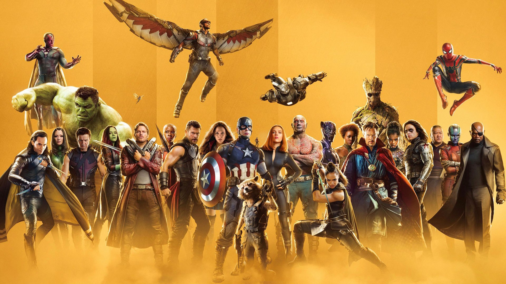
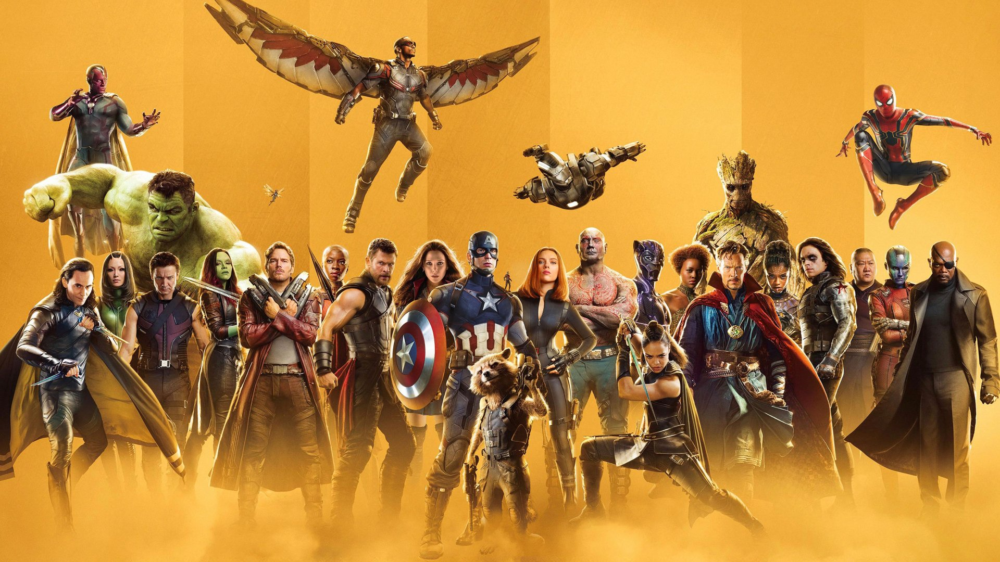

Welcome to the Ultimate Marvel Store, where your love for the Marvel Universe comes to life in an Alexa Skill!
Dive
into
a world filled with thrilling superheroes, sinister villains, and epic tales, all at the command of your voice.
Whether
you're a die-hard Marvel fan or new to the universe, this skill brings Marvel’s legendary characters, thrilling
storylines, and amazing artifacts directly to your home. Imagine an experience where you can learn about the
powers
of
Thor’s hammer, revisit iconic battles, explore character profiles, and shop Marvel-inspired merchandise, all in
one
place. With the Ultimate Marvel Store Alexa Skill, you’ll always be just a voice command away from the Marvel
Universe.
Unleash Your Marvel Fandom
The Ultimate Marvel Store skill is an adventure for everyone—from classic comic book enthusiasts to fans of the
Marvel
Cinematic Universe (MCU). Marvel has been crafting superhero sagas for decades, and now, the Ultimate Marvel Store
skill
brings you closer to that universe than ever before. Ask Alexa about your favorite heroes, get updates on the
latest
Marvel merchandise, and interact with special events and trivia quizzes designed to challenge even the biggest
Marvel
fans.
Key Features
The Ultimate Marvel Store skill is packed with amazing features that cater to Marvel fans of all kinds. Here’s
what
you
can expect:
1. Character Profiles and Origins
Explore the Marvel Roster: Get to know your favorite characters better than ever! From Iron Man and Spider-Man to
Black
Widow and Doctor Strange, Alexa can tell you everything you need to know about their backstories, powers,
alliances,
and
more.
Discover Lesser-Known Heroes and Villains: Alexa has you covered if you’re curious about Marvel's vast universe of
characters, including lesser-known figures like Moon Knight, Namor, or Taskmaster. Just ask, and explore the
incredible
range of characters Marvel has to offer.
2. Merchandise and Exclusive Deals
Shop Marvel Merchandise: Get a curated list of official Marvel merchandise, including action figures, apparel,
collectibles, and much more. Say, “Alexa, show me Spider-Man merchandise” or “What’s new in Marvel merch?” to
discover
the latest additions to the Marvel lineup.
Exclusive Discounts and Offers: Gain access to exclusive Marvel deals. If you’re looking to grab an Iron Man
collectible
or Captain America shield, you might just find it at a special price through the Ultimate Marvel Store.
.jpeg)
.jpeg)
.jpeg) 


Easy-to-Shop Experience: Once you’ve found the perfect item, Alexa can assist you in purchasing it directly,
making
your
shopping experience seamless and hassle-free.
3. Marvel Universe Trivia and Quizzes
Test Your Marvel Knowledge: Think you know everything about Marvel? Take on challenging trivia quizzes that test
your
knowledge of characters, story arcs, movie releases, comic book history, and more. Alexa’s trivia questions span
everything from beginner to expert levels!
Play for Points and Rewards: Each time you answer questions correctly, you’ll earn points, badges, and even
discounts
for the Marvel Store. The more you play, the closer you get to unlocking Marvel fan rewards.
Daily Trivia and Fact of the Day: Stay engaged with daily Marvel trivia or a “Fact of the Day” that highlights
interesting details from across the Marvel Universe, including obscure facts from the comics and fun details from
the
MCU.
4. Iconic Marvel Moments
Relive Legendary Battles and Events: The Marvel Universe is known for its iconic battles and story arcs, from the
Civil
War storyline to the Infinity Gauntlet saga. With the Ultimate Marvel Store, you can revisit these moments with
rich
narration from Alexa, who will walk you through the epic scenes as if you were right there!
Learn About the Marvel Timeline: Want to know the order of Marvel’s major events or how the universe evolved over
time?
With Alexa as your guide, explore the Marvel timeline and understand where each event falls, both in comics and
films.
5. Marvel Movie and Show Guide
Marvel Cinematic Universe Guide: Dive into the MCU with insights and fun facts about each film and Disney+ show.
Discover hidden Easter eggs, character appearances, and continuity details, all while browsing Marvel's cinematic
timeline.
Upcoming Releases and News: Stay up-to-date with Marvel’s latest announcements, upcoming films, series, and
exclusive
Disney+ releases. Just ask, “What’s coming next in Marvel?” or “Any new Marvel news today?” and Alexa will give
you
the
latest scoop.
Recommendations Based on Favorites: Not sure where to start or what to watch next? Alexa can recommend Marvel
movies
and
series based on your favorite characters or story arcs, ensuring you’ll always have something new to enjoy.
Customization and Personalization
One of the best parts of the Ultimate Marvel Store skill is that it’s fully customizable based on your
preferences.
Personalize the experience with these options:
Select Your Favorite Heroes: Customize the skill by selecting a favorite hero or two, and Alexa will prioritize
merchandise and content related to those characters.
Set Notifications for New Releases and Discounts: If you never want to miss a Marvel release or an exclusive
discount,
just enable notifications. Alexa will keep you informed about the newest merchandise and upcoming Marvel events.
Get Recommendations Based on Your Activity: The more you use the Ultimate Marvel Store, the better Alexa can
recommend
merchandise, content, and trivia topics aligned with your Marvel interests.